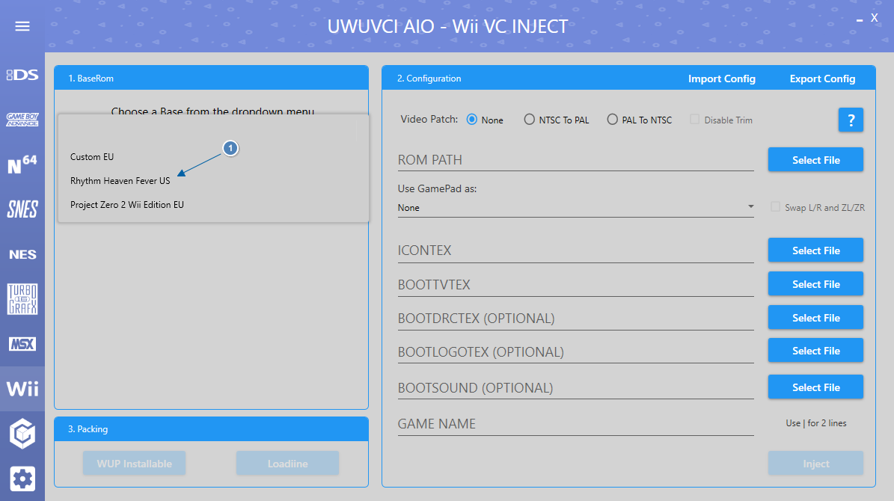
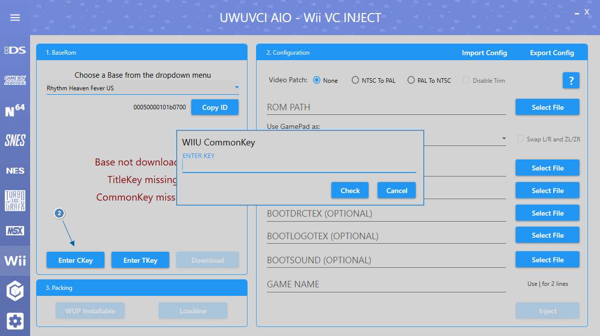
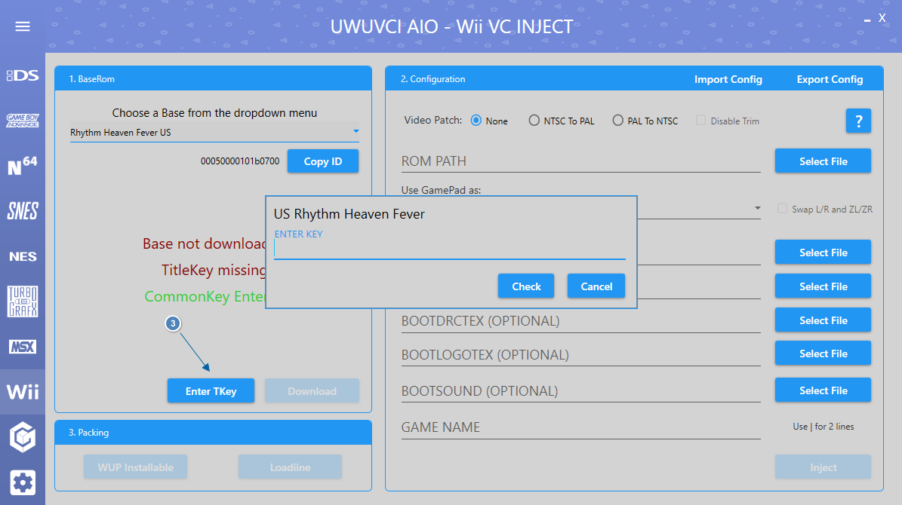
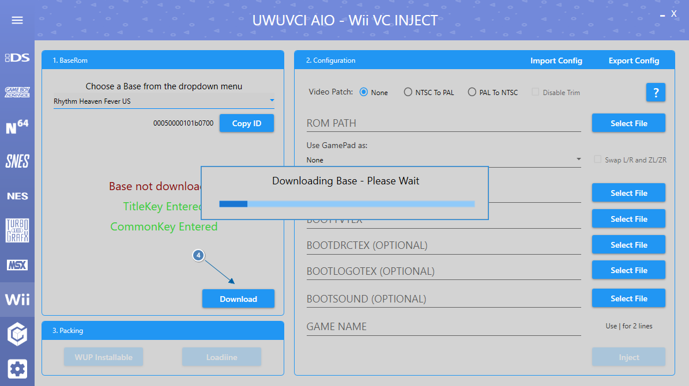
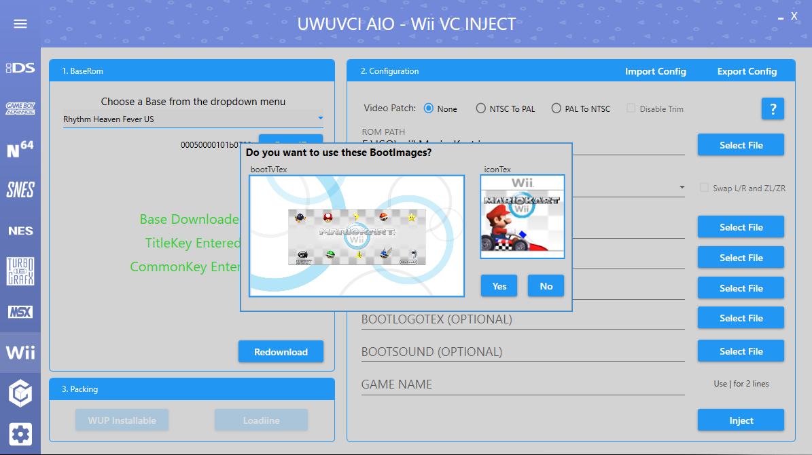
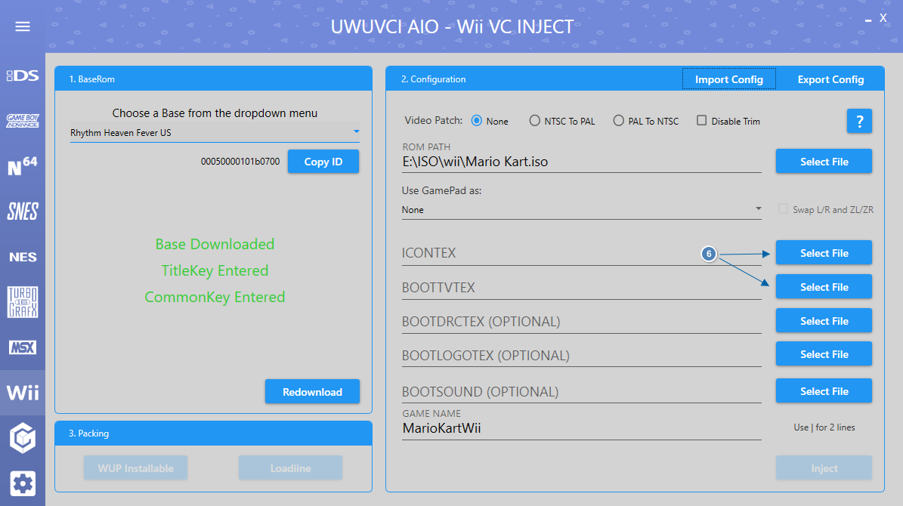
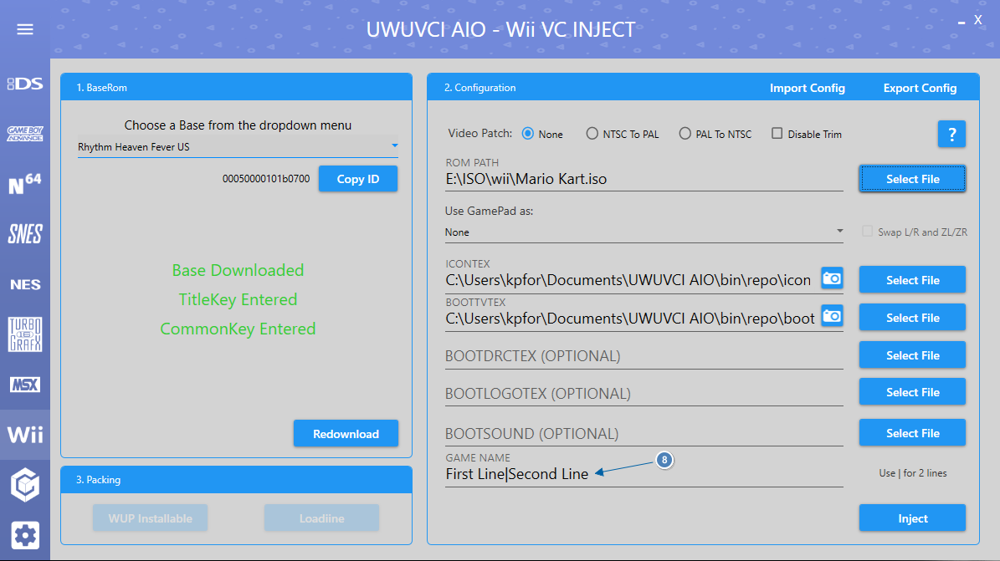
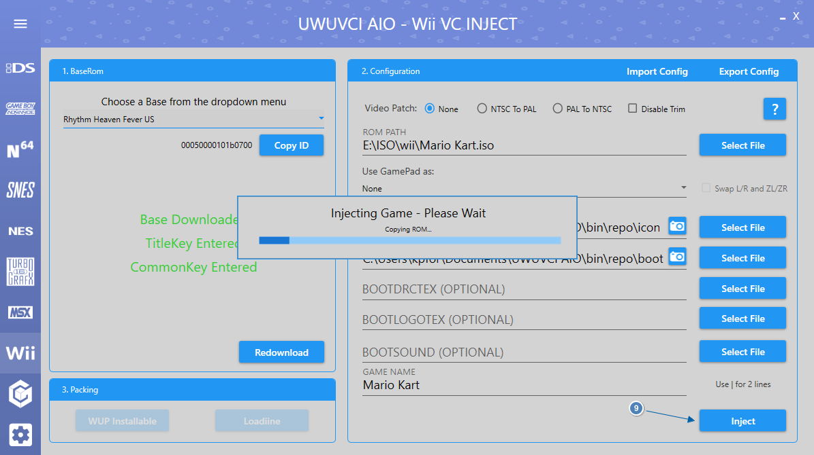
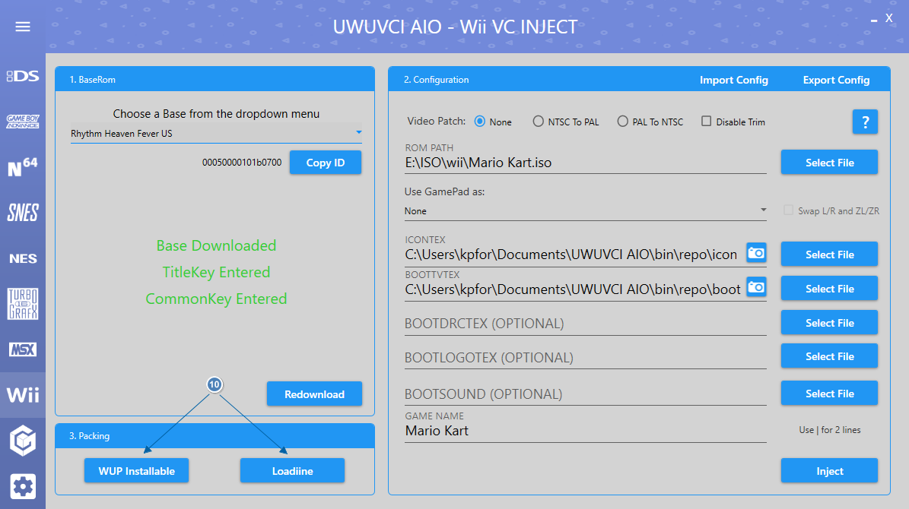
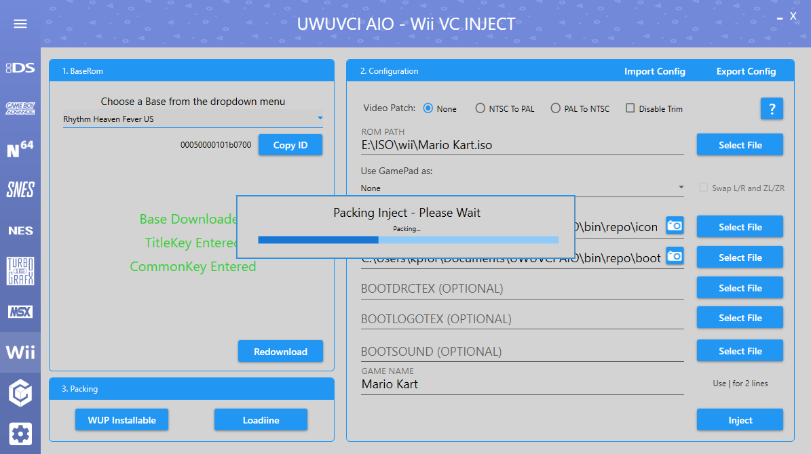

Choose a base from the dropdown menu.

If this is your first inject enter the WiiU common Key. (Google it).

Enter the Title Key for the base you selected. (Google it).

Click Download and wait for the Base to finish downloading.

Select File next to Rom path and choose the .iso, .wbfs, .nkit.iso or .nkit.gcz that you want to inject.
If there are premade images on our server for the Inject then you will be offered to download them.

If no images were found on the server in the above step or you wish to add your own custom images then you can do so now.
If no images are selected then it will use the fallback images made for the UWUVCI injector.
The resolutions of the images are 128x128 for ICONTEX and 1280x720 for BOOTTVTEX.

BOOTDRCTEX, BOOTLOGOTEX and BOOTSOUND are all optional.
BOOTDRCTEX will be created using the BOOTTVTEX from above if nothing is selected and BOOTLOGOTEX will use the default.
The resolutions of the images are 854x480 for BOOTDRCTEX and 172x42 for BOOTLOGOTEX.
BOOTSOUND can be a WAV, MP3 or BTSND but will only use the first 6 seconds.

Game Name can be set to whatever you want. If you require 2 lines then seperate the lines with a | .

Click Inject and wait for it to be created. This could take a while.

Once Injected select an installable format.
For this guide we will be using WUP Installable which can be installed to Wii U with WUP Installer GX.
Loadiine is for use with Cemu and the old Loadiine GX method of loading games which is slow and not recommended.

The inject will now be packed into an installable format.
